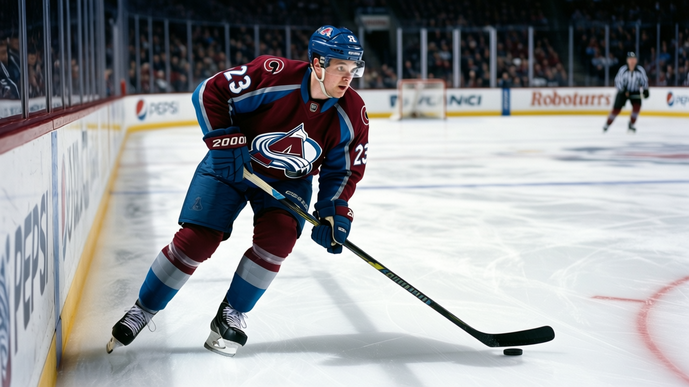

The Blaine Rankings, Week 3: Peter Forsberg is the Hart frontrunner, and his club is 12-1 on the road
Three players share a 173-point pace, the oldest of them leads in points, and the one whose team will let him keep the trophy plays in Colorado.
 Howard BlaineSenior writer, The Blaine Rankings · The Hockey Gazette
Howard BlaineSenior writer, The Blaine Rankings · The Hockey Gazette
Three players share a points pace of 173 over 82 games, and none of them sits closer than three points to the others in total production.  Bill Guerin87 of
Bill Guerin87 of  Dallas Stars has 59 points in 28 games.
Dallas Stars has 59 points in 28 games.  Peter Forsberg89 of
Peter Forsberg89 of  Colorado Avalanche and
Colorado Avalanche and  Jaromir Jagr83 of
Jaromir Jagr83 of  Washington Capitals have 55 each in 26. All three carry the same 173 pace, which means the gap between them reflects real production differences rather than schedule.
Washington Capitals have 55 each in 26. All three carry the same 173 pace, which means the gap between them reflects real production differences rather than schedule.
Guerin's case is the oldest. He is 34, he plays 20.4 minutes a night, and he carries a Dallas club that sits 5th in the league at 37 points in 28 games. His 32 goals lead the league, and his 27 assists are 6 fewer than Forsberg's 33. He is one of the few players in this league who can be the best scorer without the best team, and the Bureau's Book at 87 overall says his individual game earns a Hart conversation on that basis alone, though whether it should is a different question.
Forsberg's case is cleaner. Colorado is 21-4-0. The 44 points they have collected in 26 games is the most any club has in that many. They are 12-1 on the road, so the schedule is not the explanation. Forsberg has 22 goals and 33 assists while playing 20.0 minutes a night, and his 89 overall is the highest of the three. Colorado's four losses are spread across 26 games; they have been pushed four times and beaten everyone else.
Jagr's 55 points are real. He is 32, he plays 22.7 minutes a night, the most of the three, and his pace is identical. Washington sits 3rd in the Southeast at 29 points in 26 games, on a 4-game winning streak, and the Southeast is not a division that has yet separated from the field enough to lift a player into Hart territory. Jagr's Book grade of 83 is the lowest of the three. His numbers put him in the conversation, but his team record keeps him from the front of it.
The Hart, as the Bureau's Book would have it, belongs to Forsberg: best team in the league, individual production tied for the lead, highest grade of the three, and a club that has not coasted through a single stretch of this season.
The standings behind the top two
Colorado Avalanche and  Toronto Maple Leafs have separated from everyone else in total points, 44 and 42 respectively. The third spot is a live question.
Toronto Maple Leafs have separated from everyone else in total points, 44 and 42 respectively. The third spot is a live question.  New Jersey Devils has 39 points in 23 games, fewer contests than any other club in the top five, and their $1.15M cost per point is the lowest in the league.
New Jersey Devils has 39 points in 23 games, fewer contests than any other club in the top five, and their $1.15M cost per point is the lowest in the league.  New York Rangers has 40 points in 29 games, the most games played of any club in this league, and their $1.94M per point is the most expensive among the top five in points. The Rangers have won two straight, they are 15-7-4, but 123 goals for against 110 against is a thinner margin than the point total suggests.
New York Rangers has 40 points in 29 games, the most games played of any club in this league, and their $1.94M per point is the most expensive among the top five in points. The Rangers have won two straight, they are 15-7-4, but 123 goals for against 110 against is a thinner margin than the point total suggests.
 Vancouver Canucks and
Vancouver Canucks and  Edmonton Oilers are tied at 34 points in 26 games each. Edmonton's $1.08M per point is the second-lowest in the league behind Vancouver's $1.03M, the two cheapest rosters among any club that has 34 or more points. These clubs have the two lowest payrolls in the league, $34.94M and $36.81M respectively, and they sit second and third in the Northwest. Whether that construction holds through April is the question the Blaine Rankings will revisit in March.
Edmonton Oilers are tied at 34 points in 26 games each. Edmonton's $1.08M per point is the second-lowest in the league behind Vancouver's $1.03M, the two cheapest rosters among any club that has 34 or more points. These clubs have the two lowest payrolls in the league, $34.94M and $36.81M respectively, and they sit second and third in the Northwest. Whether that construction holds through April is the question the Blaine Rankings will revisit in March.
Dallas Stars at 37 points in 28 games sits 5th, and  Tampa Bay Lightning at 33 in 26 sits 6th on a pace that would put them in the top eight if the season ended today. Tampa Bay's $1.39M per point and their $24.60M profit suggest the model is working, with
Tampa Bay Lightning at 33 in 26 sits 6th on a pace that would put them in the top eight if the season ended today. Tampa Bay's $1.39M per point and their $24.60M profit suggest the model is working, with  Vincent Lecavalier90 posting 46 points in 26 games and a 90 overall.
Vincent Lecavalier90 posting 46 points in 26 games and a 90 overall.
The Vezina, three days on
Nothing has moved.  Martin Brodeur92 remains the goalie with the most wins in the league at 16, sitting at a 2.48 GAA in 20 starts.
Martin Brodeur92 remains the goalie with the most wins in the league at 16, sitting at a 2.48 GAA in 20 starts.  Jamie Storr78 of Colorado is at 2.53 in 18 starts with 14 wins. The 2 games between them in starts means Brodeur has had more time to build the lead and more time to lose it. At 20 games and 16 wins, the cushion is wide enough that Storr would need a 6-game winning streak and a Brodeur slump to close it.
Jamie Storr78 of Colorado is at 2.53 in 18 starts with 14 wins. The 2 games between them in starts means Brodeur has had more time to build the lead and more time to lose it. At 20 games and 16 wins, the cushion is wide enough that Storr would need a 6-game winning streak and a Brodeur slump to close it.
 Ed Belfour91 has gone 9-1-0 with 3 shutouts in 10 starts for Toronto, posting a 2.57 GAA and a 0.907 save percentage, the best in the league among goalies with 5 or more games played. That sample is small, but the 11-game Toronto winning streak that surrounds it is not. If Belfour collects 5 or 6 more starts in December, his numbers become a large enough body of work to challenge Brodeur's case. For now, the Vezina is Brodeur's to lose, and his start count is the main reason it stays that way.
Ed Belfour91 has gone 9-1-0 with 3 shutouts in 10 starts for Toronto, posting a 2.57 GAA and a 0.907 save percentage, the best in the league among goalies with 5 or more games played. That sample is small, but the 11-game Toronto winning streak that surrounds it is not. If Belfour collects 5 or 6 more starts in December, his numbers become a large enough body of work to challenge Brodeur's case. For now, the Vezina is Brodeur's to lose, and his start count is the main reason it stays that way.
Five that matter next
New Jersey Devils visits Toronto Maple Leafs on 2004-12-07, the two clubs with the best pace in the league against the team on the longest winning streak. Colorado Avalanche travels to Vancouver Canucks on 2004-12-11, a meeting between the 1st and 2nd place clubs in the Northwest that could reshape that division if the Canucks find their footing after 2 straight losses. New York Rangers hosts  Chicago Blackhawks on 2004-12-11, and the Rangers need points to defend their 40-point total against New Jersey's fewer games. Washington Capitals at
Chicago Blackhawks on 2004-12-11, and the Rangers need points to defend their 40-point total against New Jersey's fewer games. Washington Capitals at  Mighty Ducks of Anaheim on 2004-12-11 is a chance for Jagr to close the 4-point gap to Guerin against a club that has lost 5 of its last 6. And Toronto Maple Leafs at
Mighty Ducks of Anaheim on 2004-12-11 is a chance for Jagr to close the 4-point gap to Guerin against a club that has lost 5 of its last 6. And Toronto Maple Leafs at  Philadelphia Flyers on 2004-12-12 puts an 11-game streak against a club on a 4-game losing skid, which should be enough to carry Toronto into January.
Philadelphia Flyers on 2004-12-12 puts an 11-game streak against a club on a 4-game losing skid, which should be enough to carry Toronto into January.